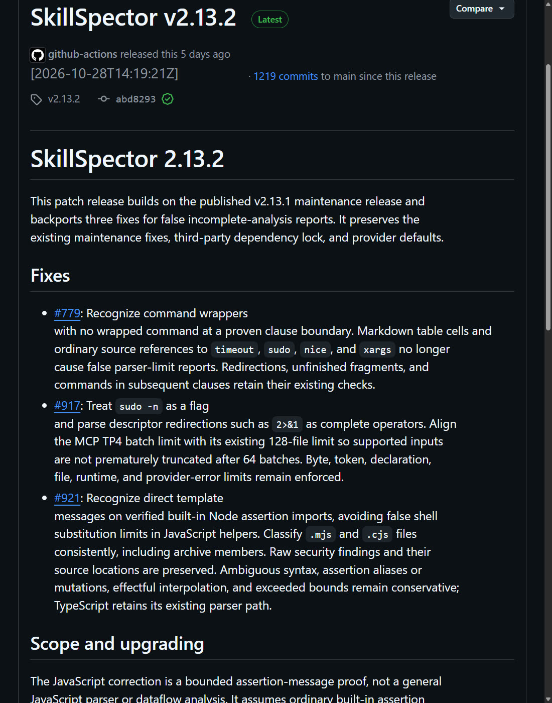
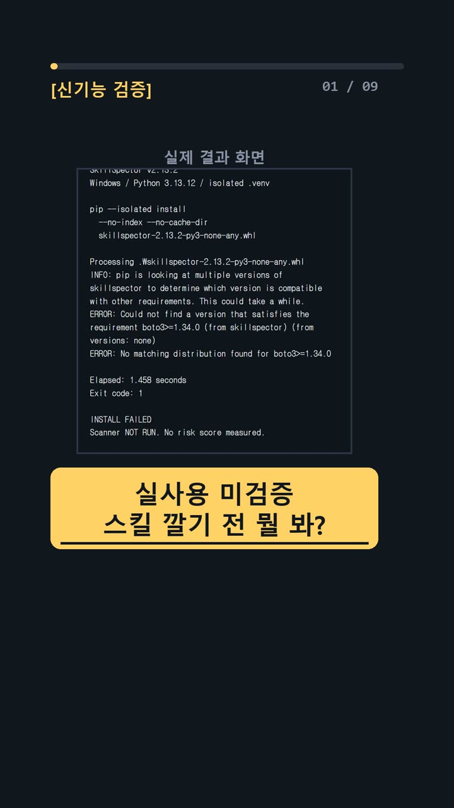
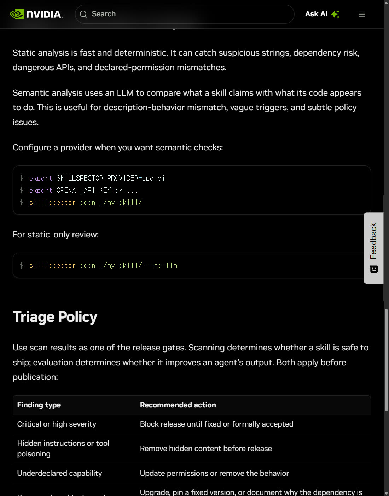
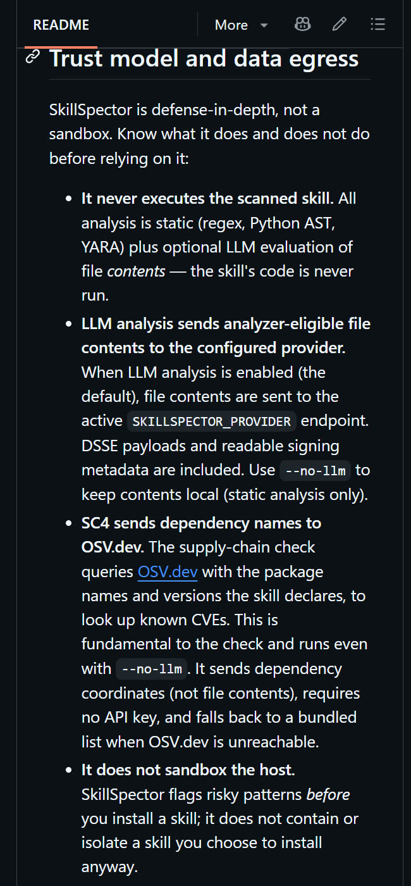

이 포스팅은 쿠팡 파트너스 및 토스쇼핑 쉐어링크 활동의 일환으로, 이에 따른 일정액의 수수료를 제공받습니다.
스킬 깔기 전 위험 신호 확인 (실사용 미검증) | 신기능 9편

실행 환경 및 확인 한계 · Windows 11 PC · 2026-11-02 확인 · 확인 수준: 일부만 직접 확인 · 실패 기록 5건
명령어·설정·실패 해결표
| 구분 | 내용 | 해결 |
|---|---|---|
| 명령어 | uv tool install | |
| 명령어 | python -m venv .venv |
한눈에 보기
- 무엇: NVIDIA가 공개한 SkillSpector는 에이전트 스킬(AI 코딩 도구에 붙이는 추가 기능 묶음)을 설치하기 전에 위험 신호를 찾아 줘요. 결과는 0~100 위험 점수와 지적 사항으로 나와요.
- 우리 결과: 확인 수준은 partial(일부만 확인)이에요. 공식 v2.13.2 파일을 받아 해시 일치까지는 확인했어요. 하지만 인터넷이 막힌 환경이라 의존성 설치에서 실패했고, 스캔은 한 번도 실행하지 못했어요.
- 한 줄 조언: 점수는 안전 인증이 아니에요. 1차 검토 도구로만 쓰고, 지적된 줄은 직접 열어 확인하세요.
시작 전에 확인할 것
- 요금: Apache-2.0 오픈소스예요. 정적 검사(코드를 실행하지 않고 내용만 살펴보는 검사) 자체에는 라이선스 요금이나 개인 API 키가 필요 없어요. 다만 외부 LLM 사용료, 기존 구독료, 통신비까지 무료라는 뜻은 아니에요.
- 계정·키:
--no-llm옵션으로 정적 분석만 하면 로그인도 키도 필요 없어요. LLM 분석은 API 키 말고도 기존 CLI 로그인(claude_cli·gemini_cli·opencode_cli)이나 로컬 Ollama 경로가 문서에 있어요. codex_cli는 등록돼 있지만 현재 비활성이에요. 이 경로들은 이번에 쓰지 않았어요. - Python: 고정 릴리스 v2.13.2는 Python 3.12 이상, 3.15 미만이 필요해요. main 브랜치는 3.16 미만으로 적혀 있으니 두 조건을 섞지 마세요.
- OS: 패키지는 OS Independent로 선언돼 있어요. 하지만 README에 따르면 윈도우에서는
--output파일 출력을 쓸 수 없어요. 윈도우에서 스캔이 실제로 되는지는 이번에 확인하지 못했어요. - 네트워크: 의존성을 내려받으려면 인터넷이 필요해요.
--no-llm이어도 의존성 이름·버전을 OSV.dev에 조회해요. 연결할 수 없으면 작은 내장 목록으로 대신 검사하니, 완전히 통신이 없는 옵션은 아니에요.
설치 방법
이번에는 uv tool install 대신 공식 wheel(파이썬 설치 파일)을 격리 venv(프로젝트 전용 가상 환경)에 설치하는 방법을 택했어요. Git 주소로 설치하면 특정 릴리스에 고정되지 않고, 사용자 공용 도구 영역에 깔리기 때문이에요. 관리자 권한, 전역 설치, 실행정책 변경은 쓰지 않았어요.
1. Python 버전 확인 ✅ 직접 해 봄
- 우리 환경은 Windows / Python 3.13.12였어요.
- 성공: 3.12~3.14 범위 안이면 돼요.
2. 격리 폴더에서 venv 만들기 ✅ 직접 해 봄
- PowerShell(윈도우 명령 입력 창)에서 작업용 폴더로 이동한 뒤 실행해요. 다른 프로젝트 venv를 덮어쓰지 않게 주의하세요.
python -m venv .venv
- 성공: 종료 코드 0이면 돼요. 아무 메시지가 안 나와도 정상이에요. 우리는 11.630초 걸렸어요.
3. 공식 wheel 내려받고 해시 비교 ✅ 직접 해 봄
- v2.13.2 릴리스 페이지에서
skillspector-2.13.2-py3-none-any.whl을 같은 폴더에 받아요. - 성공: SHA256(파일 지문) 값이 아래와 같으면 돼요. 우리 파일은 일치했어요.
82bd8e468229c949cd178edce058fceb95c415fd845ba924f56e7160c8b4b7ea
- 참고로 이 릴리스는 PyPI에 올리지 않는다고 명시돼 있어요.

4. wheel 설치 📄 공식 문서 기준 (우리는 여기서 막혔어요)
.\.venv\Scripts\python.exe -m pip --isolated install --no-cache-dir .\skillspector-2.13.2-py3-none-any.whl
- 성공:
.\.venv\Scripts\skillspector.exe파일이 생겨요. - 막히면: 의존성을 내려받을 인터넷이 필요해요. 우리는
--no-index오프라인으로 시도했다가 실패했어요(아래 결과 참고).
사용 방법
아래 단계는 모두 📄 공식 문서 기준이에요. 우리는 설치에 실패해서 실행하지 못했어요.
1. 도움말 확인 📄
.\.venv\Scripts\skillspector.exe --help
2. 키 없이 정적 검사 📄 Git 저장소, URL, zip, 폴더, 단일 파일을 넣을 수 있어요.
.\.venv\Scripts\skillspector.exe scan .\my-skill --no-llm
3. JSON으로 저장(윈도우) 📄 --output 대신 stdout(화면 출력)을 믿을 수 있는 경로로 넘겨요.
.\.venv\Scripts\skillspector.exe scan .\my-skill --no-llm --format json > .\report.json
4. 점수 읽기 📄 위험 점수 설명
- 0~20 SAFE
- 21~50 CAUTION
- 51~80 HIGH / DO NOT INSTALL
- 81~100 CRITICAL / DO NOT INSTALL
5. 지적 사항 직접 확인 📄 점수만 보지 말고 파일·줄 위치, 검사 범위, 미완료 표시를 함께 봐요.
우리가 직접 해 본 결과
확인 수준: partial. 시간순으로 적을게요.
- 공식 URL 3개(GitHub, 릴리스, NVIDIA 문서)를 직접 열어 읽었어요.
- v2.13.2 출시 시각은 2026-10-28T14:19:21Z였어요. 오탐성 incomplete-analysis 보고를 줄이는 유지보수 수정 3가지가 담겼어요.
- wheel 다운로드는 HTTP 200으로 0.857초 걸렸어요. 내부 METADATA의 Version은 2.13.2, 해시도 일치했어요.
- venv 생성은 성공했어요.
- pip 설치는 1.458초 만에 종료 코드 1로 실패했어요. 원인은
boto3>=1.34.0의존성을 오프라인에서 찾지 못한 거예요. 명령줄 인터넷 제한을 우회하지는 않았어요. skillspector.exe가 없어서--help, 버전 확인, 샘플 스캔은 모두 못 했어요.

예상과 달랐던 점: 공식 wheel 하나만 있으면 오프라인으로 설치될 줄 알았어요. 실제로는 boto3 같은 의존성을 따로 내려받아야 했어요.
시행착오 하나 더: 실패 로그를 file://로 열려고 했더니 브라우저가 로컬 파일 접근을 막았어요. 그래서 실제 로그를 읽어 별도 뷰어에 크게 띄워 찍었어요. 터미널 캡처가 아니라 원문 로그를 보여 주는 화면이에요.

검증하지 못한 것: 깨끗한 예제와 위험 예제는 만들지도, 실행하지도 않았어요. 그래서 점수 차이, 지적 줄, 오탐, 검사 소요 시간은 없어요. SNS에 돌던 "8초 만에 49점" 같은 수치는 우리 측정값이 아니에요. 별 수는 저장소 화면에서 약 23.9k로 봤고(최신 커밋 2026년 11월 2일), 정확한 숫자와 X 조회수는 확인하지 않았어요.
README가 인용한 연구도 짚어 둘게요. 전체 42,447개 중 실제 분석한 31,132개 기준으로 26.1%에 취약점, 5.2%에 악성 의심 패턴이 있었다고 해요. 악성으로 확정된 비율은 아니고, 우리가 원문을 따로 재검증하지는 않았어요. 패턴 수는 README가 71개, NVIDIA 문서가 68개로 서로 달라요.
자주 막히는 곳
boto3를 못 찾는다며 설치 실패: 의존성 다운로드에 인터넷이 필요해요.--no-index로는 안 돼요.skillspector.exe가 없음: 설치가 끝나지 않았다는 뜻이에요. 4단계 로그를 다시 보세요.- 윈도우에서
--output안 됨: README에 적힌 제한이에요.>로 stdout을 저장하세요. - Python 버전 오류: v2.13.2는 3.12~3.14만 받아요.
- "
--no-llm이면 완전 오프라인?": 아니에요. OSV.dev 조회가 있을 수 있어요.
이번 실험의 한계도 분명히 적어요. 설치 시도 1회, 스캔 0회예요. 그래서 이 도구의 탐지 성능은 전혀 평가하지 못했어요. 시도 과정은 쇼츠에도 담았어요.
[광고·제휴] 이 글 주제와 관련된 AI 작업 장비
상품 정보와 관련 주제어를 연결한 목록이며, 직접 사용한 후기가 아닙니다.
정리
SkillSpector는 스킬을 깔기 전에 위험 신호를 보여 주는 무료 1차 검토 도구예요. 공식 wheel과 해시까지는 문제없이 확인했어요. 하지만 우리 환경에서는 의존성 설치에서 멈춰 실제 검사는 못 했어요. 인터넷이 되는 격리 환경에서 다시 시도해 결과를 올릴게요. 이 글은 실제 실험 기록을 바탕으로 AI 도구와 함께 정리했어요.
혹시 글에서 틀린 부분이나 고쳐야 할 부분이 보이면 유튜브·스레드 댓글로 알려 주시면 정말 감사하겠습니다. 바로 확인해서 고칠게요!
🎬 쇼츠로 다시 보기 · 🧵 함께 이야기하기
🧵 스레드 @alligatorxor에서 오늘 실험 이야기 나누기 · ▶ 유튜브 새AI실험노트 다른 쇼츠 보기 · 📒 실험노트 홈